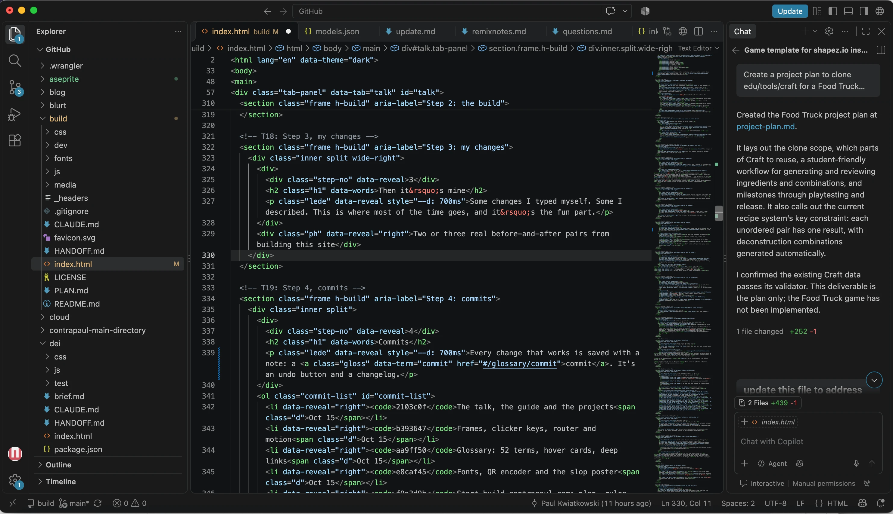
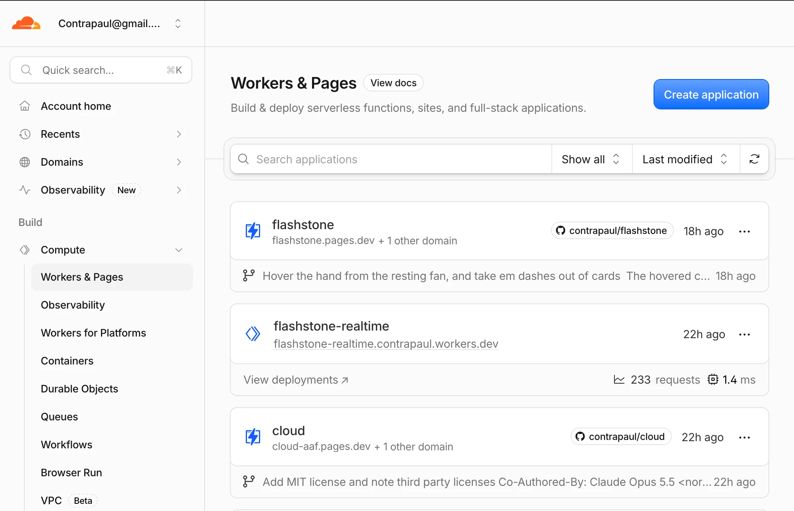
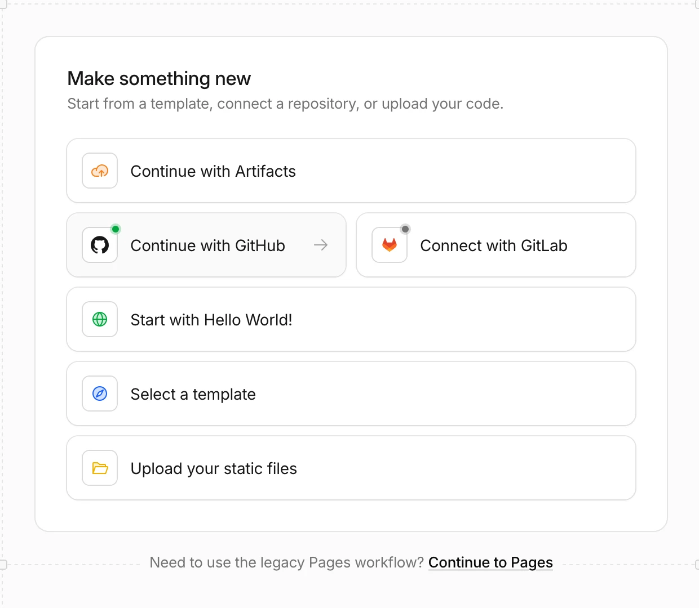
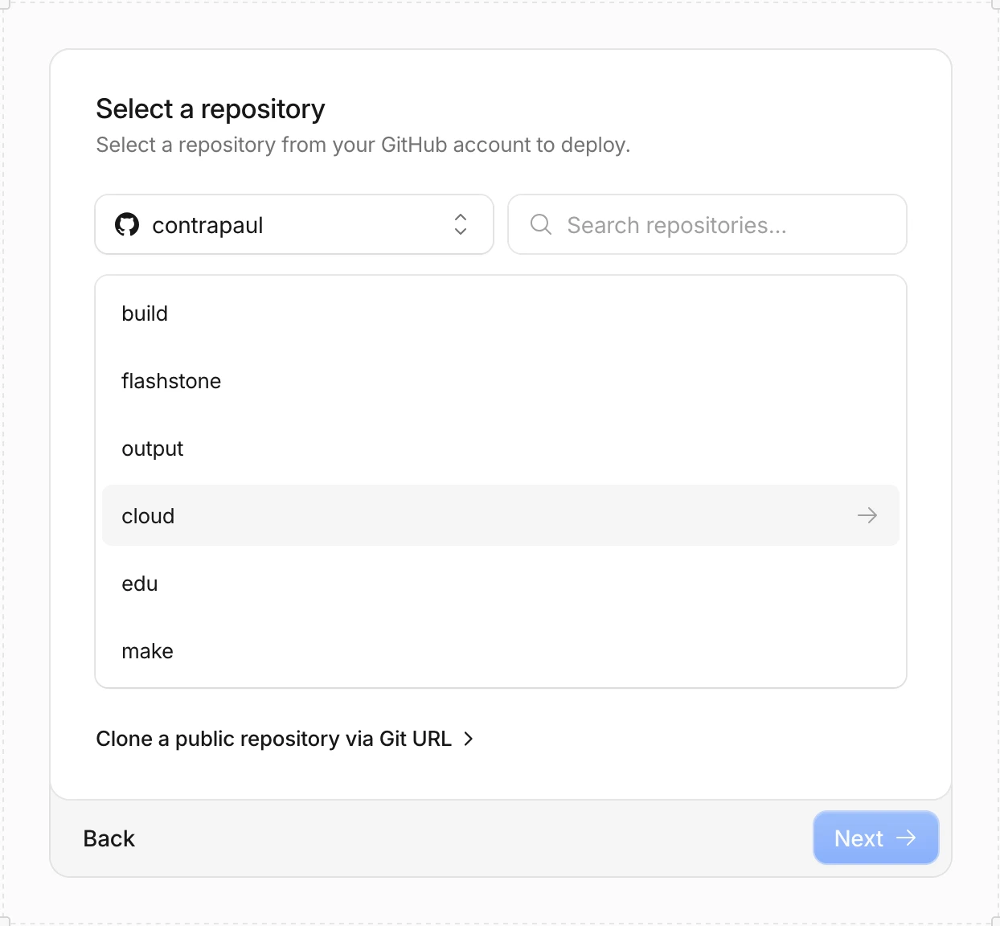
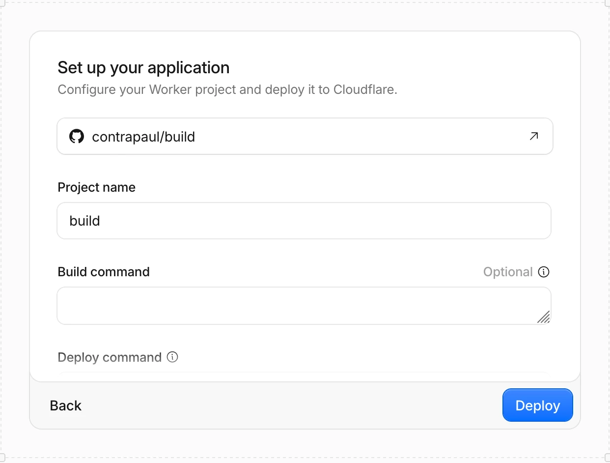
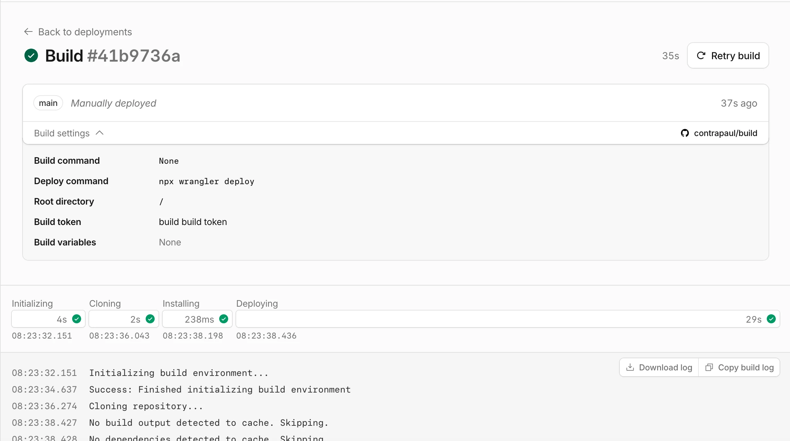
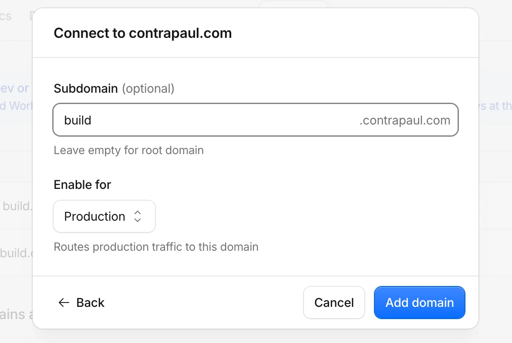
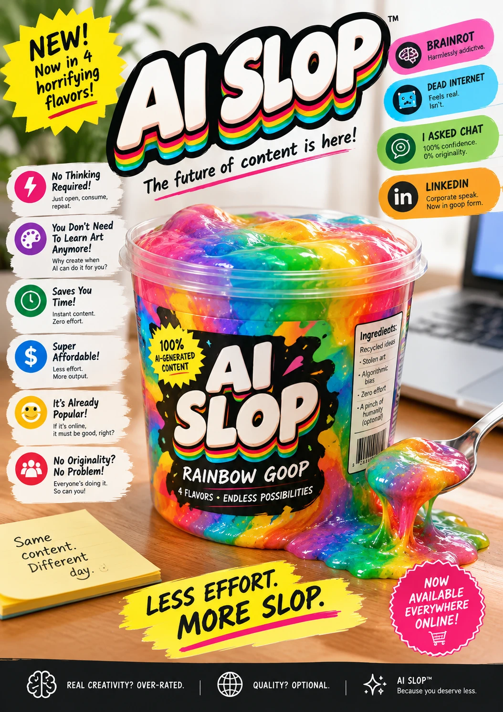

17 October 2026, Shenzhen
Not a “prompt talk”
How I actually build learning websites with AI
We just used one of my tools
Cloud
Created to support an all staff presentation my wife gave, when the 'perfect' tool wasn't available*.
*At least, not available free, and she didn't want another subscription...
cloud.contrapaul.comOpenI am a
Design Technology Teacher. Also a designer, maker, and 'tech person'
Part one
A few thingsthat I made
*By using a range of AI models to turn my ideas into projects which live on the internet.
01
Task Analysis Builder
Create a simple task analysis map, with space for cognitive tasks.
edu.contrapaul.com/tools/taskanalysisOpen02
Central Middlezhong
A retro terminal "adventure" that casts the player as a designer and engineer helping the town to choose materials for projects. Predates my actual website.
edu.contrapaul.com/tools/central-middlezhong-adventureOpen03
EasyFEA
A streamlined, accessible finite element analysis tool for students and teachers. Brand new.
edu.contrapaul.com/tools/easyfeaOpen04
Infinite Food Truck
Students combine ingredients to discover prepared foods, dishes and meals, Infinite Craft style.
edu.contrapaul.com/tools/foodtruckOpen05
contrapaul / edu
My education content hub. Including my own DP Deisign Technology textbook, tools, assessment material, and a lot of themes.
edu.contrapaul.comOpenPart two
It isn't about prompts, it's about structure.
This is the part where we get a bit technical.
Most people have used a chatbot, but that isn't the way to build things.
The model plans before it types.
Read the thinking when something goes wrong. It shows you what it misunderstood.
AI agnostic
Any agentic model, in any harness.
Models evolve constantly, but we've reached a point where every notable model is useful. Learn more at Artificial Analysis.
Permanence is the point
A chat disappears. A repo remembers.
A chat has a memory limit, a context window. A repo keeps every file and every saved change.
Real commits from my trivia night repo.
On your device, or in the cloud.
My laptop
A local session sees my files and opens a live preview.
The cloud
A cloud session starts from a browser or my phone, works on a copy, and sends it back.
Part three
You’re looking at the example.
This site did not exist on 15 October. It's been a busy few weeks. Thankfully I had a plan...
> I'll start with cloud.contrapaul.com and a question. Following that I'll switch tabs and jump to build.contrapaul.com, which will be a new website that is both a presentation and a guide. > I want to have a multi-tab page ... with the ability to use keyboard shortcuts (arrows) to move between each full screen page element as if they are slides, but the tabs can also be scrolled through conventionally. > The style/inspiration is slick motion graphics, with the feel of being sliding through/scrolling through a video showcase.
The build
The first session: the tabs, the frames, the keys. Claude ran the page, looked at it, and fixed its own mistakes.
Editing the code
Some changes I typed myself. Some I described. This is where most of the time goes, and it’s actually fun. Mostly.

Commits
Every change that works is saved with a note: a commit. It's an undo button and a changelog.
2103c0fThe talk, the guide and the projectsOct 15b393647Frames, clicker keys, router and motionOct 15aa9ff50Glossary: 52 terms, hover cards, deep linksOct 15e8caf45Fonts, QR encoder and the slop posterOct 15f9a3d9bStart build.contrapaul.com: plan, rules, handoffOct 15
Live on Cloudflare
A static site is just files. Connect the repo once, and every push goes live in about a minute. On my own domain, it works in China.






Part four
What matters more than prompts.
Habit: be specific
Name it. Describe it. Be crystal clear.
Make the video bigger and nicer.VAGUE
The video should load first in a player that fills ~90+% of either horizontal or vertical dimensions, depending on video size. Once it ends I’d like it to dissolve/fade... and have the question load in, filling much of the screen but leaving breathing room.SPECIFIC: MY TRIVIA PROJECT
Habit: write the rules down
Class rules, for the agent.
Rules ensure consistency and cut down on editing. (And they can be added by models)
Nothing is fetched from another host, ever. Fonts are in public/fonts. No CDN, no Google Fonts. Those are unreachable in China and a blocking request to a dead host stops the page in front of a room full of people. Do not add questions. TBD in the data means Paul has not settled it. Legible from the back of the room. Every screen is judged at a distance. Bigger is better. Nothing depends on hover.
A rule I hold myself to: no AI art
An AI advert, selling AI slop.
- Every line is a pair of fragments: “Less effort. More slop.”
- “Harmlessly addictve”, and a brain icon that falls apart up close
- “Ingredients” decays into “Ingredieats”
- Four flavors promised, one mixed rainbow in the tub
Students notice.Students know.Students judge.

AI-generated: shown as an exampleThe other side
Tell students what AI made, and why.
When they see how it was used, and what it made possible, they buy in. We ask students for AI disclosure. We should model it.
Habit: write it down, and make the agent keep it
Brief first. Plan next. Handoff always.
The agent forgets everything between sessions. The handoff file is its memory, like a cover note for a substitute.
- Status at a glance
- Ground rules
- Gotchas that have already bitten
- Open items
- Working with Paul
After every change that works, add a dated entry to the top of the log in HANDOFF.md: what was asked, what was built, what was decided and why, and what is still unverified. Update the status section if it changed. Do this before saying you are finished.
Mom can we write code?
“We have code at home.”
curriculum.jsA story
Fixing it live, in class.
Quick tips
- Start with something you needNot something big and impressive, a specific need.
- One change at a timeCheck it yourself.
- When it works, commitUndo is free. Use it.
- Ask “what is this called?”And “explain what you just did.”
- Ask for demonstrationsGet the model to show you what you don't know.
- Read the thinkingWhen it goes wrong, that’s where the clue is.
Your turn
Questions, or play.
If there is time
One more thing.
One small change to this site, live. Commit, push, and reload in about a minute.
Start here
Build your firstwebsite.
A one-page website at your own address, built with an AI coding agent. About an hour the first time. Scroll, or use the arrow keys.
What you need
- A GitHub account. Free.
- A Cloudflare account. Free.
- An AI coding agent: VS Code, Claude Code, Opencode, Deepseek Harness, OpenAI Codex, GitHub Copilot, and more. Many need a paid plan, but not all. Any agentic one will do.
- Optional: buy your own domain for about the price a dinner on Meituan.
Pick something you need
Not something impressive. Need makes you specific.
- A quiz for one unit, with an explanation for each wrong answer
- A sorting activity: drag terms into groups
- A countdown to an exam or event
- A helper for writing report comments from your own phrases
Write a one-page brief
Before any code, answer four questions in plain language. That is your brief.
- Who uses it?
- Where? A projector, a phone, a school laptop. Say which screen.
- What does done look like? “A student on a phone can finish it without scrolling sideways.”
- What must it never do? “Ask for names.” “Load anything from another website.”
A template is at the end of this page.
Build it in the browser
The easiest first route: nothing to install.
- On GitHub, create a new, empty repo.
- Open a cloud session on it (for example, claude.ai/code).
- Paste your brief and ask: “Write a plan for this. Don’t write code yet.”
- Read the plan. Change what is wrong. Approve it.
- Ask it to build, and to add a CLAUDE.md and a HANDOFF.md using the templates below.
- Review what it made, then merge it into your main branch.
On your own computer instead? Install your agent, clone the repo, and follow the same steps in a local session, with a live preview.
Publish it
- In Cloudflare: Workers & Pages, then Create application.
- Continue with GitHub, and choose your repo.
- Name the project and leave the build command empty. A static site needs none.
- Deploy. You get an address within a minute.
- Optional: under Domains, add a subdomain of your own domain.
From now on, every push goes live by itself.
Make it yours
- One change at a time. Check it yourself.
- When it works, commit.
- Don’t know what something is called? Ask. Then use that word.
- Same mistake twice? Add a rule to your rules file.
- Something wrong? Read the thinking to see what it misunderstood.
Before you share it
- No student data: no names, no accounts, no tracking.
- Add a license, so people know what they may reuse.
- Add an AI disclosure line: what AI made, what you did.
- No AI images. Use your own, your students’ (with credit), or none.
- Open it on a phone.
Working from mainland China
- Some US/EU AI coding tools need a proxy server.
- GitHub works, but can be slow.
- Cloudflare Pages on your own domain loads normally.
*.pages.devandgithub.ioaddresses often don’t. - Keep everything in the project: no Google Fonts, no CDNs.
Starter files
Copy these into your repo. They work with any agent. Some agents look for AGENTS.md instead of CLAUDE.md: check which yours reads.
# Brief: [name] ## Who uses it [Students in grade X / colleagues / me on a projector] ## Where [Projector at 16:9 / phones / school laptops] ## What it does [Two or three sentences] ## Done looks like - [A student can ... without ...] - [It loads in under ... on school wifi] ## Must never - Ask for names or accounts - Load anything from another website
# Handoff Newest entry at the top. The agent updates this after every working change. ## Status [One paragraph: what works, what does not yet] ## Open items - [ ] ## Gotchas that have already bitten ## Log ### [date]: [what changed]
# Rules for this project Read BRIEF.md and HANDOFF.md before changing anything. - No student data. No names, no accounts, no tracking. Why: this is public. - Nothing is loaded from another website. Fonts and scripts are saved in the project. Why: blocked sites stop the page loading. - One change at a time, and say what you changed. Why: I need to check it. - Ask before guessing. If the brief does not say, ask me. - After every change that works, add a dated entry to the top of HANDOFF.md: what was asked, what was built, what was decided, and what is still unchecked. Do this before telling me you are finished.
Where next
See what it can become.
The Projects tab has everything from the talk. For students learning to code with AI, there is a bilingual guide at make.contrapaul.com/tools/codewithai.
Projects
More Things I’ve made.
All built with AI coding agents, some for learning, some for fun. Not everything is finished or polished.
Project 01 of 12
AI in Education
How AI tools work today, why the 2023 picture of them is out of date, and how to use them to learn rather than to skip learning.
edu.contrapaul.com/aiOpenProject 02 of 12
Breadboard
Wire ESP32-S3 projects on a virtual breadboard and test your CircuitPython code before you build it for real.
edu.contrapaul.com/tools/breadboardOpenProject 03 of 12
Electronics Parts Catalog
Microcontrollers, sensors and components for the grade 10 electronics unit. Filter by signal type, then open a card for pins, wiring and warnings.
edu.contrapaul.com/tools/electronicsOpenProject 04 of 12
Infinite Food Truck
Combine ingredients to discover prepared foods, dishes and meals, Infinite Craft style.
edu.contrapaul.com/tools/foodtruckOpenProject 05 of 12
Game Mechanics Catalog
Tabletop game mechanics for student designers. Filter by what you need, then open any card for rules, examples and where to research further.
edu.contrapaul.com/tools/mechanicsOpenProject 06 of 12
Game Bench
Tools for people making tabletop games: dice odds, custom dice, colour sets and grid paper.
make.contrapaul.com/fun/gametoolsOpenProject 07 of 12
Recommended Games
A hand-picked list of games worth playing for their educational value. Tap any one to see why it made the list.
edu.contrapaul.com/tools/greatgamesOpenProject 08 of 12
How Local AI Works
An interactive guide to how local AI models run: hardware, memory bandwidth and the real cost of inference.
make.contrapaul.com/localaiOpenProject 09 of 12
Auditorium Seating Planner
Plan the auditorium seating: place and erase seat blocks, apply colour themes, then save or export the plan as an image.
edu.contrapaul.com/tools/AuditoriumOpenProject 10 of 12
Tome of Secrets
A deckbuilding roguelike. Contributed art and audio ship in the game, with credit.
tome.contrapaul.comOpenProject 11 of 12
EasyFEA
A finite element analysis sandbox. Choose a product, set its materials and loads, and see how it bends, where it is stressed, and whether it would fail.
edu.contrapaul.com/tools/easyfeaOpenProject 12 of 12
contrapaul / edu
A growing IB Design Technology curriculum, MYP resources and interactive tools, built by a teacher for students and teachers.
edu.contrapaul.comOpenBut wait,
There's even more!
Glossary
AI WORDS
Spread throughout this site.